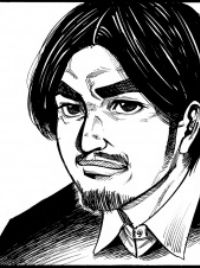
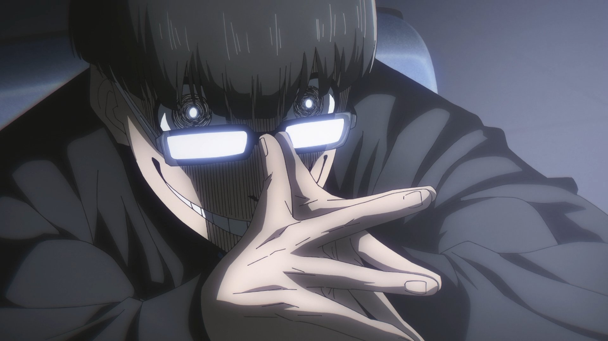

Yusuke Nomura
Yusuke Nomura, o ilustrador, contribuiu para dar vida à história visualmente, criando os personagens e cenas que complementam o roteiro de Kaneshiro.

Muneyuki Kaneshiro
Muneyuki Kaneshiro é um roteirista japonês de mangá, conhecido por seu trabalho em várias séries populares.

Ego Jinpachi
Ao longo da obra é apresentado diversas filosofias e mentalidades grande parte disso vem de Ego Jinpachi o criador do projeto Blue Lock, acredito que todo mundo pode tirar algum proveito de alguma forma de mentalidade que ele propõe.